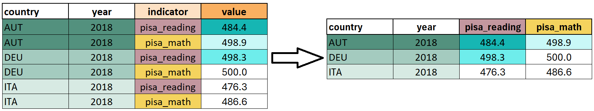

penguins <- palmerpenguins::penguins |>
dplyr::rename(
bill_len = bill_length_mm,
bill_dep = bill_depth_mm,
flipper_len = flipper_length_mm,
body_mass = body_mass_g
)
penguins
#> # A tibble: 344 × 8
#> species island bill_len bill_dep flipper_len body_mass sex year
#> <fct> <fct> <dbl> <dbl> <int> <int> <fct> <int>
#> 1 Adelie Torgersen 39.1 18.7 181 3750 male 2007
#> 2 Adelie Torgersen 39.5 17.4 186 3800 female 2007
#> 3 Adelie Torgersen 40.3 18 195 3250 female 2007
#> 4 Adelie Torgersen NA NA NA NA <NA> 2007
#> 5 Adelie Torgersen 36.7 19.3 193 3450 female 2007
#> 6 Adelie Torgersen 39.3 20.6 190 3650 male 2007
#> # ℹ 338 more rows3 Daten aufbereiten
Datensätze liegen häufig nicht in der Form vor, die für Analyse oder Visualisierung benötigt wird. Daher müssen wir sie meist zunächst aufbereiten. Dazu gehört, relevante Variablen auszuwählen, Beobachtungen zu filtern, Datentypen zu korrigieren, neue Kennzahlen zu berechnen oder Informationen sinnvoll zusammenzufassen. Um diese Schritte zu illustrieren, verwenden wir den Palmer Penguins-Datensatz, der über das Package palmerpenguins frei verfügbar ist:
Der penguins Datensatz enthält Informationen zu 344 Pinguinen mit den folgenden acht Variablen:
| Variable | Beschreibung |
|---|---|
| species | Spezies des Pinguins (Adelie, Chinstrap, Gentoo) |
| island | Insel, auf der der Pinguin beobachtet wurde (Biscoe, Dream, Torgersen) |
| bill_len | Schnabellänge in Millimetern |
| bill_dep | Schnabeltiefe in Millimetern |
| flipper_len | Flügellänge in Millimetern |
| body_mass | Körpergewicht in Gramm |
| sex | Geschlecht |
| year | Jahr der Beobachtung |
3.1 Dplyr
Zur Datenmanipulation verwenden wir das dplyr Package, das Teil von tidyverse ist. In diesem Kapitel lernen wir die wichtigsten dplyr-Funktionen kennen. Für eine ausführliche Einführung siehe Kapitel 3, 5 und 12–19 in R for Data Science. Alle dplyr-Funktionen nehmen einen Datensatz (Data Frame oder Tibble) als erstes Argument, führen die gewünschte Operation aus und geben einen neuen Datensatz zurück. Solltest du das tidyverse noch nicht geladen haben, lade es mit:
TippPipes
Komplexe Transformationen erfordern oft, mehrere dplyr-Funktionen zu kombinieren. Beispiel: Wir wollen einen Datensatz erstellen, der nur Pinguine der Insel Biscoe enthält und pro Spezies die durchschnittliche Schnabellänge berechnet:
Für eine besser lesbare Verkettung von Funktionen werden wir in Zukunft Pipes (|>) verwenden. Pipes ermöglichen, dass das Ergebnis eines Ausdrucks direkt an die nächste Funktion übergeben wird, ohne dass man verschachtelte Klammern schreiben muss oder Objekte mehrfach definieren muss.
Eine Pipe übergibt das Ergebnis des linken Ausdrucks automatisch als erstes Argument an die Funktion rechts: x |> f(y) ↔︎ f(x, y) und x |> f(y) |> g(z) ↔︎ g(f(x, y), z). Somit können wir den Code besser lesbar schreiben als:
3.2 Tidy Data Sets
Daten können in unterschiedlicher Struktur dargestellt werden. Für die Arbeit in R eignet sich besonders das tidy data-Format. Es folgt drei Grundregeln: - Jede Variable ist eine Spalte - Jede Beobachtung ist eine Zeile - Jede Zelle enthält genau einen Wert
Durch diese Struktur wird der Datensatz übersichtlich, leicht zu analysieren und kompatibel mit modernen R-Werkzeugen wie dplyr und ggplot2.
In unserem Übungsdatensatz penguins ist jede Zeile ein einzelner Pinguin und in den Spalten erhalten wir Informationen zu bestimmten Variablen (z.B. Spezies oder Geschlecht) für jede dieser Pinguin-Beobachtungen.
3.3 Daten auswählen und sortieren
Bevor wir mit Analysen beginnen, müssen wir häufig relevanten Daten auswählen und sortieren, um den Datensatz übersichtlich zu halten. Mit dplyr erledigen wir dies z.B. mit select() zum Auswählen von Variablen, filter() oder slice() zum Filtern von Zeilen, distinct() und drop_na() zum Bereinigen von Duplikaten und fehlenden Werten sowie arrange() zum Sortieren. So können wir gezielt nur die Informationen betrachten, die für die Analyse wichtig sind.
3.3.1 select()
select() ermöglicht es uns, nur die gewünschten Spalten eines Datensatzes zu behalten. Benötigen wir etwa nur Informationen zur Spezies, Insel und der Flügellänge können wir diese Variablen auswählen mit:
penguins |>
select(species, island, flipper_len)
#> # A tibble: 344 × 3
#> species island flipper_len
#> <fct> <fct> <int>
#> 1 Adelie Torgersen 181
#> 2 Adelie Torgersen 186
#> 3 Adelie Torgersen 195
#> 4 Adelie Torgersen NA
#> 5 Adelie Torgersen 193
#> 6 Adelie Torgersen 190
#> # ℹ 338 more rowsUm eine Variable zu entfernen, setzen wir ein Ausrufezeichen (!) davor (alternativ kann auch ein Minus verwendet werden):
penguins |>
select(!island)
#> # A tibble: 344 × 7
#> species bill_len bill_dep flipper_len body_mass sex year
#> <fct> <dbl> <dbl> <int> <int> <fct> <int>
#> 1 Adelie 39.1 18.7 181 3750 male 2007
#> 2 Adelie 39.5 17.4 186 3800 female 2007
#> 3 Adelie 40.3 18 195 3250 female 2007
#> 4 Adelie NA NA NA NA <NA> 2007
#> 5 Adelie 36.7 19.3 193 3450 female 2007
#> 6 Adelie 39.3 20.6 190 3650 male 2007
#> # ℹ 338 more rowsUm mehrere aufeinanderfolgende Variablen auszuwählen, können wir diese mit firstvar:lastvar zusammenfassen:
penguins |>
select(bill_len:body_mass)
#> # A tibble: 344 × 4
#> bill_len bill_dep flipper_len body_mass
#> <dbl> <dbl> <int> <int>
#> 1 39.1 18.7 181 3750
#> 2 39.5 17.4 186 3800
#> 3 40.3 18 195 3250
#> 4 NA NA NA NA
#> 5 36.7 19.3 193 3450
#> 6 39.3 20.6 190 3650
#> # ℹ 338 more rowsEine Reihe von zusätzlichen dplyr-Funktionen sind im Zusammenhang ebenfalls hilfreich: starts_with("text"), ends_with("text") und contains("text") innerhalb von select() wählen all jene Variablen aus, deren Namen mit "text" beginnen, enden bzw. "text" beinhalten. Mit where() werden alle Variablen ausgewählt, auf die eine bestimmte Kondition zutrifft. everything() wählt alle Variablen aus, last_col() die letzte Spalte:
penguins |>
select(starts_with("bill"))
#> # A tibble: 344 × 2
#> bill_len bill_dep
#> <dbl> <dbl>
#> 1 39.1 18.7
#> 2 39.5 17.4
#> 3 40.3 18
#> 4 NA NA
#> 5 36.7 19.3
#> 6 39.3 20.6
#> # ℹ 338 more rows
penguins |>
select(where(is.factor))
#> # A tibble: 344 × 3
#> species island sex
#> <fct> <fct> <fct>
#> 1 Adelie Torgersen male
#> 2 Adelie Torgersen female
#> 3 Adelie Torgersen female
#> 4 Adelie Torgersen <NA>
#> 5 Adelie Torgersen female
#> 6 Adelie Torgersen male
#> # ℹ 338 more rows
penguins |>
select(last_col())
#> # A tibble: 344 × 1
#> year
#> <int>
#> 1 2007
#> 2 2007
#> 3 2007
#> 4 2007
#> 5 2007
#> 6 2007
#> # ℹ 338 more rows
HinweisHinweis
Damit der penguins Datensatz nicht immer wieder neu geladen werden muss, speichern wir Transformationen in diesem Kapitel nicht ab. In der eigenen Datenaufbereitung solltest du Änderungen einem Objekt zuweisen, damit diese erhalten bleiben:
penguins <- penguins |>
select(!island)3.3.2 filter()
Mit filter() können wir bestimmte Zeilen eines Datensatzes auswählen, die bestimmte Bedingungen erfüllen. So lassen sich gezielt Beobachtungen extrahieren, etwa alle Pinguine der Art Adelie oder alle Pinguine mit einer Schnabellänge von mindestens 40 Milimetern:
penguins |>
filter(species == "Adelie")
#> # A tibble: 152 × 8
#> species island bill_len bill_dep flipper_len body_mass sex year
#> <fct> <fct> <dbl> <dbl> <int> <int> <fct> <int>
#> 1 Adelie Torgersen 39.1 18.7 181 3750 male 2007
#> 2 Adelie Torgersen 39.5 17.4 186 3800 female 2007
#> 3 Adelie Torgersen 40.3 18 195 3250 female 2007
#> 4 Adelie Torgersen NA NA NA NA <NA> 2007
#> 5 Adelie Torgersen 36.7 19.3 193 3450 female 2007
#> 6 Adelie Torgersen 39.3 20.6 190 3650 male 2007
#> # ℹ 146 more rows
penguins |>
filter(bill_len >= 40)
#> # A tibble: 242 × 8
#> species island bill_len bill_dep flipper_len body_mass sex year
#> <fct> <fct> <dbl> <dbl> <int> <int> <fct> <int>
#> 1 Adelie Torgersen 40.3 18 195 3250 female 2007
#> 2 Adelie Torgersen 42 20.2 190 4250 <NA> 2007
#> 3 Adelie Torgersen 41.1 17.6 182 3200 female 2007
#> 4 Adelie Torgersen 42.5 20.7 197 4500 male 2007
#> 5 Adelie Torgersen 46 21.5 194 4200 male 2007
#> 6 Adelie Biscoe 40.6 18.6 183 3550 male 2007
#> # ℹ 236 more rows
TippLogische Operatoren in R
Viele Schritte in der Datenaufbereitung setzen Kenntniss über logische Operatoren in R voraus. Tabelle 3.2 fasst die wichtigsten zusammen:
| Operator | Bedeutung | Beispiel |
|---|---|---|
| == | gleich | species == "Adelie" |
| != | ungleich | species != "Adelie" |
| < | kleiner als | bill_len < 40 |
| > | größer als | bill_len > 40 |
| <= | kleiner oder gleich | bill_len <= 40 |
| >= | größer oder gleich | bill_len >= 40 |
| %in% | enthalten in | species %in% c("Adelie", "Gentoo") |
| !%in% | nicht enthalten in | species !%in% c("Adelie", "Gentoo") |
| & | logisches UND | sex == "female" & island == "Biscoe" |
| | | logisches ODER | bill_len >= 45 | bill_len <= 35 |
Wollen wir auf mehrere Konditionen gleichzeitig filtern, können wir diese in der Filter-Option angeben. Wir extrahieren weibliche Pinguine auf der Insel Biscoe mit:
penguins |>
filter(sex == "female" & island == "Biscoe")
#> # A tibble: 80 × 8
#> species island bill_len bill_dep flipper_len body_mass sex year
#> <fct> <fct> <dbl> <dbl> <int> <int> <fct> <int>
#> 1 Adelie Biscoe 37.8 18.3 174 3400 female 2007
#> 2 Adelie Biscoe 35.9 19.2 189 3800 female 2007
#> 3 Adelie Biscoe 35.3 18.9 187 3800 female 2007
#> 4 Adelie Biscoe 40.5 17.9 187 3200 female 2007
#> 5 Adelie Biscoe 37.9 18.6 172 3150 female 2007
#> 6 Adelie Biscoe 39.6 17.7 186 3500 female 2008
#> # ℹ 74 more rowsDas Subset an Pinguinen, die eine Schnabellänge von mindestens 45mm oder eine Schnabellänge von höchstens 35mm haben filtern wir mit dem Oder-Operator |:
penguins |>
filter(bill_len >= 45 | bill_len <= 35)
#> # A tibble: 177 × 8
#> species island bill_len bill_dep flipper_len body_mass sex year
#> <fct> <fct> <dbl> <dbl> <int> <int> <fct> <int>
#> 1 Adelie Torgersen 34.1 18.1 193 3475 <NA> 2007
#> 2 Adelie Torgersen 34.6 21.1 198 4400 male 2007
#> 3 Adelie Torgersen 34.4 18.4 184 3325 female 2007
#> 4 Adelie Torgersen 46 21.5 194 4200 male 2007
#> 5 Adelie Biscoe 35 17.9 190 3450 female 2008
#> 6 Adelie Biscoe 34.5 18.1 187 2900 female 2008
#> # ℹ 171 more rowsÄquivalent zu den Base R Operatoren & und | sind die dplyr-Funktionen when_all() und when_any():
penguins |>
filter(when_all(sex == "female", island == "Biscoe"))
#> # A tibble: 80 × 8
#> species island bill_len bill_dep flipper_len body_mass sex year
#> <fct> <fct> <dbl> <dbl> <int> <int> <fct> <int>
#> 1 Adelie Biscoe 37.8 18.3 174 3400 female 2007
#> 2 Adelie Biscoe 35.9 19.2 189 3800 female 2007
#> 3 Adelie Biscoe 35.3 18.9 187 3800 female 2007
#> 4 Adelie Biscoe 40.5 17.9 187 3200 female 2007
#> 5 Adelie Biscoe 37.9 18.6 172 3150 female 2007
#> 6 Adelie Biscoe 39.6 17.7 186 3500 female 2008
#> # ℹ 74 more rows
penguins |>
filter(when_any(bill_len >= 40, body_mass >= 4000))
#> # A tibble: 253 × 8
#> species island bill_len bill_dep flipper_len body_mass sex year
#> <fct> <fct> <dbl> <dbl> <int> <int> <fct> <int>
#> 1 Adelie Torgersen 40.3 18 195 3250 female 2007
#> 2 Adelie Torgersen 39.2 19.6 195 4675 male 2007
#> 3 Adelie Torgersen 42 20.2 190 4250 <NA> 2007
#> 4 Adelie Torgersen 41.1 17.6 182 3200 female 2007
#> 5 Adelie Torgersen 34.6 21.1 198 4400 male 2007
#> 6 Adelie Torgersen 42.5 20.7 197 4500 male 2007
#> # ℹ 247 more rows
WarnungUmgang mit NAs: filter_out()
Logische Bedingungen können bei fehlenden Werten ( (NA) Probleme verursachen. Wollen wir etwa alle weiblichen Pinguine aus dem Datensatz entfernen führt penguins |> filter(sex != "female") dazu, dass sowohl weibliche Pinguine als auch jene mit fehlender Geschlechtsinformation ausgeschlossen werden.
Mit filter_out() schließen wir nur Beobachtungen aus, auf welche die Kondition zutrifft:
penguins |>
filter_out(sex == "female")
#> # A tibble: 179 × 8
#> species island bill_len bill_dep flipper_len body_mass sex year
#> <fct> <fct> <dbl> <dbl> <int> <int> <fct> <int>
#> 1 Adelie Torgersen 39.1 18.7 181 3750 male 2007
#> 2 Adelie Torgersen NA NA NA NA <NA> 2007
#> 3 Adelie Torgersen 39.3 20.6 190 3650 male 2007
#> 4 Adelie Torgersen 39.2 19.6 195 4675 male 2007
#> 5 Adelie Torgersen 34.1 18.1 193 3475 <NA> 2007
#> 6 Adelie Torgersen 42 20.2 190 4250 <NA> 2007
#> # ℹ 173 more rowsDer Datensatz enthält jetzt keine weiblichen Pinguine mehr, aber jene mit fehlenden Werten sind weiterhin enthalten.
3.3.3 slice()
Manchmal möchten wir nur einen Teil des Datensatzes auswählen, ohne explizit nach bestimmten Werten zu filtern. Das ist besonders praktisch bei großen Datensätzen, wenn wir zunächst nur mit einem Sample arbeiten wollen, um Rechenressourcen zu schonen. Dafür nutzen wir slice(), zum Beispiel um die Zeilen 1, 3 und 6–8 aus dem penguins-Datensatz auszuwählen:
penguins |>
slice(1, 3, 6:8)
#> # A tibble: 5 × 8
#> species island bill_len bill_dep flipper_len body_mass sex year
#> <fct> <fct> <dbl> <dbl> <int> <int> <fct> <int>
#> 1 Adelie Torgersen 39.1 18.7 181 3750 male 2007
#> 2 Adelie Torgersen 40.3 18 195 3250 female 2007
#> 3 Adelie Torgersen 39.3 20.6 190 3650 male 2007
#> 4 Adelie Torgersen 38.9 17.8 181 3625 female 2007
#> 5 Adelie Torgersen 39.2 19.6 195 4675 male 2007Für slice() steht eine Reihe hilfreicher Varianten zur Verfügung:
-
slice_head()/slice_tail(): Nimmt die ersten/letzen N Beobachtungen eines Datensatzes (penguins |> slice_head(n = 10)) -
slice_min()/slice_max(): Nimmt die N Beobachtungen mit den niedrigsten/höchsten Werten einer Variable (penguins |> slice_min(bill_len, n = 5)) -
slice_sample(): Zieht zufällig N Beobachtungen aus dem gesamten Datensatz (penguins |> slice_sample(n = 5)). Für Reproduzierbarkeit sollte zuerst mitset.seed()ein Seed gesetzt werden.
Hinweisslice() mit gruppierten Daten
Haben wir den Datensatz mit group_by() in Gruppen klassifiziert, so wird die jeweilige slice-Operation auf jede Gruppe separat angewandt:
penguins |>
group_by(island) |>
slice_max(bill_len, n = 2)
#> # A tibble: 6 × 8
#> # Groups: island [3]
#> species island bill_len bill_dep flipper_len body_mass sex year
#> <fct> <fct> <dbl> <dbl> <int> <int> <fct> <int>
#> 1 Gentoo Biscoe 59.6 17 230 6050 male 2007
#> 2 Gentoo Biscoe 55.9 17 228 5600 male 2009
#> 3 Chinstrap Dream 58 17.8 181 3700 female 2007
#> 4 Chinstrap Dream 55.8 19.8 207 4000 male 2009
#> 5 Adelie Torgersen 46 21.5 194 4200 male 2007
#> 6 Adelie Torgersen 45.8 18.9 197 4150 male 20083.3.4 distinct()
Oft enthält ein Datensatz doppelte Zeilen, die für die Analyse nicht relevant sind. Mit distinct() können wir gezielt nur die einzigartigen Beobachtungen behalten und so Redundanzen entfernen. Zum Beispiel lassen sich im penguins-Datensatz alle verschiedenen Kombinationen aus Spezies und Insel extrahieren:
penguins |>
distinct(species, island)
#> # A tibble: 5 × 2
#> species island
#> <fct> <fct>
#> 1 Adelie Torgersen
#> 2 Adelie Biscoe
#> 3 Adelie Dream
#> 4 Gentoo Biscoe
#> 5 Chinstrap DreamSpezifizieren wir keine Variablen innerhalb von distinct(), so droppen wir alle Duplikate aus dem Datensatz (im penguins Datensatz gibt aber es keine zwei identen Beobachtungen). Mit der Option .keep_all = TRUE behalten wir die Informationen in allen weiteren Variablen für die erste distinkte Beobachtung:
penguins |>
distinct(species, island, .keep_all = TRUE)
#> # A tibble: 5 × 8
#> species island bill_len bill_dep flipper_len body_mass sex year
#> <fct> <fct> <dbl> <dbl> <int> <int> <fct> <int>
#> 1 Adelie Torgersen 39.1 18.7 181 3750 male 2007
#> 2 Adelie Biscoe 37.8 18.3 174 3400 female 2007
#> 3 Adelie Dream 39.5 16.7 178 3250 female 2007
#> 4 Gentoo Biscoe 46.1 13.2 211 4500 female 2007
#> 5 Chinstrap Dream 46.5 17.9 192 3500 female 20073.3.5 drop_na()
Oft enthalten Datensätze fehlende Werte (NA), die bestimmte Analysen oder Berechnungen stören können. Mit drop_na() können wir gezielt alle Zeilen entfernen, die in ausgewählten Variablen fehlende Werte enthalten, und so einen sauberen Datensatz erhalten. Zum Beispiel lässt sich im penguins-Datensatz nur jene Beobachtungen behalten, bei denen die Schnabeltiefe nicht fehlt:
penguins |>
drop_na(bill_dep)
#> # A tibble: 342 × 8
#> species island bill_len bill_dep flipper_len body_mass sex year
#> <fct> <fct> <dbl> <dbl> <int> <int> <fct> <int>
#> 1 Adelie Torgersen 39.1 18.7 181 3750 male 2007
#> 2 Adelie Torgersen 39.5 17.4 186 3800 female 2007
#> 3 Adelie Torgersen 40.3 18 195 3250 female 2007
#> 4 Adelie Torgersen 36.7 19.3 193 3450 female 2007
#> 5 Adelie Torgersen 39.3 20.6 190 3650 male 2007
#> 6 Adelie Torgersen 38.9 17.8 181 3625 female 2007
#> # ℹ 336 more rowsSpezifizieren wir keine Variable innerhalb von drop_na(), so werden sämtliche Beobachtungen mit zumindest einem fehlenden Wert in einer der Variablen ausgeschlossen (penguins |> drop_na()).
WarnungGefahren beim Entfernen fehlender Werte
Man sollte mit drop_na() vorsichtig sein, weil beim Entfernen von Zeilen mit fehlenden Werten unter Umständen wichtige Daten verloren gehen. Gerade wenn viele Variablen NA-Werte enthalten, kann das zu einer stark verkleinerten Stichprobe führen und die Analyse verzerren. Deshalb sollte man vorher prüfen, wie viele Werte betroffen sind und überlegen, ob alternative Strategien wie Imputation oder gezieltes Entfernen nur einzelner Spalten sinnvoller sind.
3.3.6 arrange()
Mit arrange() können wir die Zeilen eines Datensatzes nach einer oder mehreren Variablen sortieren. So lassen sich Daten übersichtlicher darstellen, Extremwerte leicht erkennen oder vorbereitend für weitere Analysen ordnen, ohne den Datensatz inhaltlich zu verändern.
penguins |>
arrange(bill_len, bill_dep)
#> # A tibble: 344 × 8
#> species island bill_len bill_dep flipper_len body_mass sex year
#> <fct> <fct> <dbl> <dbl> <int> <int> <fct> <int>
#> 1 Adelie Dream 32.1 15.5 188 3050 female 2009
#> 2 Adelie Dream 33.1 16.1 178 2900 female 2008
#> 3 Adelie Torgersen 33.5 19 190 3600 female 2008
#> 4 Adelie Dream 34 17.1 185 3400 female 2008
#> 5 Adelie Torgersen 34.1 18.1 193 3475 <NA> 2007
#> 6 Adelie Torgersen 34.4 18.4 184 3325 female 2007
#> # ℹ 338 more rowsWenn mehr als eine Variable angeführt ist, ordnet arrange() zuerst nach der erstgenannten und nur bei Gleichstand nach den weiteren Variablen. Fehlende Werte werden immer als letztes angeordnet. Per Default ordnet arrange() von unten nach oben. Wollen wir vom Maximum aus sortieren, verwenden wir desc() innerhalb von arrange():
penguins |>
arrange(desc(bill_len))
#> # A tibble: 344 × 8
#> species island bill_len bill_dep flipper_len body_mass sex year
#> <fct> <fct> <dbl> <dbl> <int> <int> <fct> <int>
#> 1 Gentoo Biscoe 59.6 17 230 6050 male 2007
#> 2 Chinstrap Dream 58 17.8 181 3700 female 2007
#> 3 Gentoo Biscoe 55.9 17 228 5600 male 2009
#> 4 Chinstrap Dream 55.8 19.8 207 4000 male 2009
#> 5 Gentoo Biscoe 55.1 16 230 5850 male 2009
#> 6 Gentoo Biscoe 54.3 15.7 231 5650 male 2008
#> # ℹ 338 more rows3.4 Variablen verändern und erstellen
Neben dem Auswählen und Sortieren ist es für viele Analysen notwendig, Variablen zu verändern oder neue zu erstellen. Mit dplyr nutzen wir dafür insbesondere mutate() zur Berechnung oder Transformation von Variablen. Außerdem lernen wir in diesem Abschnitt, wie wir diese Umwandlungen auf Basis bedingter Fallunterscheidungen treffen (if_else(), case_when(), replace_when()) und wie wir einzelne Ausprägungen von Variabeln gezielt umcodieren (recode_values(), replace_values()). Auf diese Weise lassen sich Variablen anpassen, neu strukturieren und in eine Form bringen, die für statistische Auswertungen geeignet ist.
3.4.1 mutate()
Mit mutate() erstellen wir neue Spalten (Variablen), häufig auf Basis bereits existierender Spalten. Wir können damit etwa jeder Beobachtung in penguins eine Beobachtungs-ID hinzufügen:
penguins |>
mutate(
id = row_number()
)
#> # A tibble: 344 × 9
#> species island bill_len bill_dep flipper_len body_mass sex year
#> <fct> <fct> <dbl> <dbl> <int> <int> <fct> <int>
#> 1 Adelie Torgersen 39.1 18.7 181 3750 male 2007
#> 2 Adelie Torgersen 39.5 17.4 186 3800 female 2007
#> 3 Adelie Torgersen 40.3 18 195 3250 female 2007
#> 4 Adelie Torgersen NA NA NA NA <NA> 2007
#> 5 Adelie Torgersen 36.7 19.3 193 3450 female 2007
#> 6 Adelie Torgersen 39.3 20.6 190 3650 male 2007
#> # ℹ 338 more rows
#> # ℹ 1 more variable: id <int>Per Default wir diese Variable an das Ende des Datensatzes hinzugefügt. Wir können die Position der Variable jedoch mit dem Argument .before = ... bzw. .after = ... spezifizieren, wobei hier sowohl numerische Werte für die Spaltenzahl sowie Variablennamen akzeptiert werden.
Besonders hilfreich ist mutate() um neue Variablen auf Basis der Werte in bereits bestehenden zu definieren. Wollen wir etwa uns das Verhältnis von Schnabellänge und Schnabeltiefe (auf zwei Dezimalstellen gerundet) angeben, und diese neue Variable im Datensatz nach bill_dep angeordnet haben:
penguins |>
mutate(
bill_ratio = round(bill_len/bill_dep, digits = 2),
.after = bill_dep
)
#> # A tibble: 344 × 9
#> species island bill_len bill_dep bill_ratio flipper_len body_mass sex
#> <fct> <fct> <dbl> <dbl> <dbl> <int> <int> <fct>
#> 1 Adelie Torgersen 39.1 18.7 2.09 181 3750 male
#> 2 Adelie Torgersen 39.5 17.4 2.27 186 3800 female
#> 3 Adelie Torgersen 40.3 18 2.24 195 3250 female
#> 4 Adelie Torgersen NA NA NA NA NA <NA>
#> 5 Adelie Torgersen 36.7 19.3 1.9 193 3450 female
#> 6 Adelie Torgersen 39.3 20.6 1.91 190 3650 male
#> # ℹ 338 more rows
#> # ℹ 1 more variable: year <int>Innerhalb von mutate() können wir auch mehrere Variablen gleichzeitig definieren, indem wir die jeweiligen Operationen mit einem Komma trennen. Wenn wir keine neue Variable kreieren, sondern eine bestehende adaptieren wollen, verwenden wir einfach den jeweiligen Variablennamen auf der linken Seite. Wollen wir etwa eine Beobachtungs-ID hinzufügen, das Schnabel-Ratio erstellen und das Gewicht in Kilogramm anstelle von Gramm angegeben haben:
penguins |>
mutate(
id = row_number(),
bill_ratio = round(bill_len/bill_dep, digits = 2),
body_mass = body_mass/1000,
) |>
select(id, bill_len, bill_dep, bill_ratio, body_mass)
#> # A tibble: 344 × 5
#> id bill_len bill_dep bill_ratio body_mass
#> <int> <dbl> <dbl> <dbl> <dbl>
#> 1 1 39.1 18.7 2.09 3.75
#> 2 2 39.5 17.4 2.27 3.8
#> 3 3 40.3 18 2.24 3.25
#> 4 4 NA NA NA NA
#> 5 5 36.7 19.3 1.9 3.45
#> 6 6 39.3 20.6 1.91 3.65
#> # ℹ 338 more rows
HinweisRelevante Funktionen für mutate()
Tabelle 3.3 zeigt wichtige Funktionen, die wir oft mit mutate() verwenden, um neue Variablen zu erstellen oder bestehende zu verändern:
| Funktion | Bedeutung | Beispiel |
|---|---|---|
| row_number() | Laufende Zeilennummer (ggf. innerhalb von Gruppen) | id = row_number() |
| lag(), lead() | Vorheriger/nächster Wert (zeilenweise Verschiebung) | prev_mass = lag(body_mass) |
| cumsum() | Kumulierte Summe | cum_mass = cumsum(body_mass, na.rm = T) |
| pmin(), pmax() | Elementweises (Zeilenweises) Minimum/Maximum mehrerer Vektoren | max_bill = pmax(bill_len, bill_depth) |
| abs() | Absolutwert | abs_diff = abs(bill_len - bill_depth) |
| round() | Rundet auf bestimmte Dezimalstellen | body_mass = round(body_mass/1000, digits = 2) |
| floor(), ceiling() | Rundet ab/auf | body_mass = floor(body_mass/1000) |
| cut() | Fasst numerische Variablen in Kategorien zusammen | bill_len_group = cut(bill_len, breaks = 3)) |
Hinweis: Bei manchen Funktionen müssen wir auf den Umgang mit NA Werten achten! Wenn du bei diesen na.rm = TRUE angibst, ignoriert die Funktion alle fehlenden Werte und berechnet das Ergebnis nur mit den vorhandenen, gültigen Werten.
3.4.2 if_else(), case_when() & replace_when()
Oft wollen wir eine Variable basierend auf Konditionen transformieren. Für konditionelle Transformationen greifen wir auf if_else() zurück. Diese Funktion folgt immer dem Schema if_else(condition, output_true, output_false). Um Schnabellängen in große Schnäbel (>=40mm) und kleine Schnäbel (<40mm) zu unterteilen:
HinweisHinweis
Wir können durch Nesting von if_else() für mehrere Konditionen Transformationen definieren:
Nesting führt jedoch dazu, dass der Code immer schlechter lesbar wird. Stattdessen verwenden wir in solchen Fällen besser case_when(). Hier definieren wird für jede Kondition einen Output, nach dem Syntax condition ~ output:
penguins |>
mutate(
bill_size = case_when(
bill_len >= 40 ~ "large",
bill_len >= 37 ~ "medium",
bill_len < 37 ~ "small"
),
.keep = "used"
)
#> # A tibble: 344 × 2
#> bill_len bill_size
#> <dbl> <chr>
#> 1 39.1 medium
#> 2 39.5 medium
#> 3 40.3 large
#> 4 NA <NA>
#> 5 36.7 small
#> 6 39.3 medium
#> # ℹ 338 more rowsMit dem Argument .default = output können wir außerdem den Output kontrollieren, wenn keine der Konditionen zutrifft:
penguins |>
mutate(
bill_size = case_when(
bill_len >= 40 ~ "large",
bill_len >= 37 ~ "medium",
bill_len < 37 ~ "small",
.default = "no bill length"
),
.keep = "used"
)
#> # A tibble: 344 × 2
#> bill_len bill_size
#> <dbl> <chr>
#> 1 39.1 medium
#> 2 39.5 medium
#> 3 40.3 large
#> 4 NA no bill length
#> 5 36.7 small
#> 6 39.3 medium
#> # ℹ 338 more rows
WarnungFehlerquellen bei case_when()
Beim konditionellen Transformieren mit case_when() sind zwei Punkte zu beachten. Erstens werden die Konditionen der Reihe nach durchgegangen und spätere Konditionen nur dann evaluiert, wenn für den jeweiligen Wert die vorherigen Konditionen alle nicht zutreffen. Fehler bei der Reihenfolge führen also zu Fehlern in der Transformation:
penguins |>
mutate(
bill_size = case_when(
bill_len >= 37 ~ "medium",
bill_len >= 40 ~ "large",
bill_len < 37 ~ "small",
.default = "no bill length"
),
.keep = "used"
)
#> # A tibble: 344 × 2
#> bill_len bill_size
#> <dbl> <chr>
#> 1 39.1 medium
#> 2 39.5 medium
#> 3 40.3 medium
#> 4 NA no bill length
#> 5 36.7 small
#> 6 39.3 medium
#> # ℹ 338 more rowsZweitens sollten immer alle möglichen Konditionen definiert sein. Spezifizieren wir beispielsweise nicht die Kondition für bill_size == "small" sondern setzen wir diese nur als Default, wird dieser Output auch auf fehlende Werte angewendet:
penguins |>
mutate(
bill_size = case_when(
bill_len >= 40 ~ "large",
bill_len >= 37 ~ "medium",
.default = "small"
),
.keep = "used"
)
#> # A tibble: 344 × 2
#> bill_len bill_size
#> <dbl> <chr>
#> 1 39.1 medium
#> 2 39.5 medium
#> 3 40.3 large
#> 4 NA small
#> 5 36.7 small
#> 6 39.3 medium
#> # ℹ 338 more rowsMöchten wir nur einzelne Werte einer existierenden Variable in Abhängigkeit von anderen Variablen verändern, ist die Funktion replace_when() hilfreich. Diese folgt dem Syntax replace_when(variable, condition ~ output).
penguins |>
filter(is.na(sex)) |>
arrange(body_mass) |>
mutate(
sex = replace_when(sex, species == "Adelie" & bill_dep > 18 ~ "male"),
.keep = "used"
)
#> # A tibble: 11 × 3
#> species bill_dep sex
#> <fct> <dbl> <fct>
#> 1 Adelie 18.9 male
#> 2 Adelie 17.1 <NA>
#> 3 Adelie 18.1 male
#> 4 Adelie 17.3 <NA>
#> 5 Gentoo 14.3 <NA>
#> 6 Adelie 20.2 male
#> # ℹ 5 more rowsIm Vergleich zu case_when() hat diese Funktion den Vorteil, dass die ursprünglichen Werte von variable bei Nicht-Zutreffen der Kondition übernommen werden, und nicht als .default = variable spezifiziert werden müssen. Außerdem erhält replace_when() den ursprünglichen Datentyp der Ausgangsvariable.
3.4.3 recode_values() & replace_values()
Mit if_else(), case_when() und recode_when() haben wir Variablen auf Basis konditioneller Logik transformiert. Wollen wir die alten Werte von sex in neue Werte übersetzen, können wir recode_values() verwenden:
penguins |>
mutate(
sex = recode_values(
sex,
"male" ~ "M",
"female" ~ "F",
default = NA
)
)
#> # A tibble: 344 × 8
#> species island bill_len bill_dep flipper_len body_mass sex year
#> <fct> <fct> <dbl> <dbl> <int> <int> <chr> <int>
#> 1 Adelie Torgersen 39.1 18.7 181 3750 M 2007
#> 2 Adelie Torgersen 39.5 17.4 186 3800 F 2007
#> 3 Adelie Torgersen 40.3 18 195 3250 F 2007
#> 4 Adelie Torgersen NA NA NA NA <NA> 2007
#> 5 Adelie Torgersen 36.7 19.3 193 3450 F 2007
#> 6 Adelie Torgersen 39.3 20.6 190 3650 M 2007
#> # ℹ 338 more rowsWie bei case_when() können wir also Transformationen mit der Logik old_value ~ new_value vornehmen und eine Default-Option spezifizieren. Der Vorteil von recode_values() besteht aber, wenn eine Vielzahl von Werten umcodiert wird. Diese müssen wir hier nicht als einzelne Konditionen definieren, sondern können die alten und neuen Werte gesammelt als Vektoren (in der selben Reihenfolge) über die Argumente from = old_values und to = new_values definieren:
penguins |>
mutate(
sex = recode_values(
sex,
from = c("male", "female"),
to = c("M", "F"),
default = NA
)
)
#> # A tibble: 344 × 8
#> species island bill_len bill_dep flipper_len body_mass sex year
#> <fct> <fct> <dbl> <dbl> <int> <int> <chr> <int>
#> 1 Adelie Torgersen 39.1 18.7 181 3750 M 2007
#> 2 Adelie Torgersen 39.5 17.4 186 3800 F 2007
#> 3 Adelie Torgersen 40.3 18 195 3250 F 2007
#> 4 Adelie Torgersen NA NA NA NA <NA> 2007
#> 5 Adelie Torgersen 36.7 19.3 193 3450 F 2007
#> 6 Adelie Torgersen 39.3 20.6 190 3650 M 2007
#> # ℹ 338 more rowsFür das Umcodieren einzelner Werte einer bestehenden Variable gibt es mit replace_values() eine äquivalente Funktion zu replace_when(). Auch hier werden als Default wieder automatisch die existierenden Werte verwendet:
penguins |>
mutate(
sex = replace_values(as.character(sex), NA ~ "sex unknown")
)
#> # A tibble: 344 × 8
#> species island bill_len bill_dep flipper_len body_mass sex year
#> <fct> <fct> <dbl> <dbl> <int> <int> <chr> <int>
#> 1 Adelie Torgersen 39.1 18.7 181 3750 male 2007
#> 2 Adelie Torgersen 39.5 17.4 186 3800 female 2007
#> 3 Adelie Torgersen 40.3 18 195 3250 female 2007
#> 4 Adelie Torgersen NA NA NA NA sex unknown 2007
#> 5 Adelie Torgersen 36.7 19.3 193 3450 female 2007
#> 6 Adelie Torgersen 39.3 20.6 190 3650 male 2007
#> # ℹ 338 more rows
TippUse Cases
| Funktion | Use Case |
|---|---|
| if_else() | Erstellen einer neuen Variable basierend auf konditioneller Logik (eine Kondition) |
| case_when() | Erstellen einer neuen Variable basierend auf konditioneller Logik (mehrere Konditionen) |
| replace_when() | Updaten einer existierenden Variable basierend auf konditioneller Logik |
| recode_values() | Mapping von allen alten Werten zu neuen Werten |
| replace_values() | Mapping bestimmter alter Werte zu neuen Werten |
3.5 Gruppieren und Zusammenfassen
Die Stärken von dplyr liegen vor allem in der Datenaufbereitung innerhalb bestimmter Subgruppen. Häufig wollen wir unsere Daten in Gruppen strukturieren und uns Kennzahlen innerhalb dieser Gruppen berechnen. In dpylr nutzen wir dafür insbesondere group_by(), um Beobachtungen nach bestimmten Kategorien zu gruppieren, und summarize() oder count(), um Mittelwerte, Summen, Häufigkeiten oder andere aggregierte Werte pro Gruppe zu berechnen. Auf diese Weise lassen sich Daten auf einer höheren Ebene zusammenfassen, vergleichen und in eine Form bringen, die übersichtliche Analysen und Visualisierungen ermöglicht.
3.5.1 group_by()
Um einen Datensatz in einzelne Gruppen zu unterteilen, nutzen wir group_by(). Damit können wir den penguins-Datensatz zum Beispiel nach Geschlecht unterteilen:
penguins |>
group_by(sex)
#> # A tibble: 344 × 8
#> # Groups: sex [3]
#> species island bill_len bill_dep flipper_len body_mass sex year
#> <fct> <fct> <dbl> <dbl> <int> <int> <fct> <int>
#> 1 Adelie Torgersen 39.1 18.7 181 3750 male 2007
#> 2 Adelie Torgersen 39.5 17.4 186 3800 female 2007
#> 3 Adelie Torgersen 40.3 18 195 3250 female 2007
#> 4 Adelie Torgersen NA NA NA NA <NA> 2007
#> 5 Adelie Torgersen 36.7 19.3 193 3450 female 2007
#> 6 Adelie Torgersen 39.3 20.6 190 3650 male 2007
#> # ℹ 338 more rowsDer Datensatz ist jetzt ein gruppierter Tibble. Der Output sagt uns, dass wir drei Gruppen in der sex Variable gebildet haben. Während die Daten an sich unverändert bleiben, werden jetzt alle weiteren Operationen innerhalb dieser Gruppen durchgeführt. So können wir nun etwa eine neue Variable hinzufügen, die uns das durchschnittliche Gewicht pro Gruppe gibt:
penguins |>
select(sex, body_mass, bill_len) |>
group_by(sex) |>
mutate(
avg_body_mass = round(mean(body_mass, na.rm = T)),
.after = body_mass
)
#> # A tibble: 344 × 4
#> # Groups: sex [3]
#> sex body_mass avg_body_mass bill_len
#> <fct> <int> <dbl> <dbl>
#> 1 male 3750 4546 39.1
#> 2 female 3800 3862 39.5
#> 3 female 3250 3862 40.3
#> 4 <NA> NA 4006 NA
#> 5 female 3450 3862 36.7
#> 6 male 3650 4546 39.3
#> # ℹ 338 more rowsUm anschließend wieder mit ungruppierten Daten weiterzuarbeiten, verwenden wir ungroup():
penguins |>
select(sex, body_mass, bill_len) |>
group_by(sex) |>
mutate(
avg_body_mass = round(mean(body_mass, na.rm = T)),
.after = body_mass
) |>
ungroup() |>
mutate(
avg_bill_len = round(mean(bill_len, na.rm = T), digits = 1)
)
#> # A tibble: 344 × 5
#> sex body_mass avg_body_mass bill_len avg_bill_len
#> <fct> <int> <dbl> <dbl> <dbl>
#> 1 male 3750 4546 39.1 43.9
#> 2 female 3800 3862 39.5 43.9
#> 3 female 3250 3862 40.3 43.9
#> 4 <NA> NA 4006 NA 43.9
#> 5 female 3450 3862 36.7 43.9
#> 6 male 3650 4546 39.3 43.9
#> # ℹ 338 more rows
Tipp.by
Möchten wir die Gruppenstruktur nur für eine einzelne Operation verwenden, entsteht durch group_by() und ungroup() zusätzliche Codezeilen, welche den Code unübersichtlicher machen. Anstelle dessen können wir innerhalb von mutate() (und später auch summarize()) das Argument .by = ... verwenden. Dadurch wird die Gruppierung nur innerhalb der Funktion angewandt, der resultierende Datensatz bleibt jedoch ungruppiert:
penguins |>
select(sex, body_mass, bill_len) |>
mutate(
avg_body_mass = round(mean(body_mass, na.rm = T)),
.by = sex,
.after = body_mass
)
#> # A tibble: 344 × 4
#> sex body_mass avg_body_mass bill_len
#> <fct> <int> <dbl> <dbl>
#> 1 male 3750 4546 39.1
#> 2 female 3800 3862 39.5
#> 3 female 3250 3862 40.3
#> 4 <NA> NA 4006 NA
#> 5 female 3450 3862 36.7
#> 6 male 3650 4546 39.3
#> # ℹ 338 more rowsWir können Gruppen auch auf Basis von mehreren Variablen bilden. Wir können den penguin Datensatz beispielsweise nach species und island gruppieren:
penguins |>
group_by(species, island)
#> # A tibble: 344 × 8
#> # Groups: species, island [5]
#> species island bill_len bill_dep flipper_len body_mass sex year
#> <fct> <fct> <dbl> <dbl> <int> <int> <fct> <int>
#> 1 Adelie Torgersen 39.1 18.7 181 3750 male 2007
#> 2 Adelie Torgersen 39.5 17.4 186 3800 female 2007
#> 3 Adelie Torgersen 40.3 18 195 3250 female 2007
#> 4 Adelie Torgersen NA NA NA NA <NA> 2007
#> 5 Adelie Torgersen 36.7 19.3 193 3450 female 2007
#> 6 Adelie Torgersen 39.3 20.6 190 3650 male 2007
#> # ℹ 338 more rowsGruppen werden nur für jene Kombinationen gebildet, für die Beobachtungen vorhanden sind. Obwohl es drei Inseln und drei Arten im Datensatz gibt, werden nicht neun sondern nur fünf Gruppen gebildet. Dies liegt daran, dass es nur die Spezies Adelie auf allen drei Inseln gibt, während die beiden anderen Arten nur auf jeweils einer Insel beobachtet wurden.
3.5.2 summarize()
Mit mutate() haben wir bisher Werte zeilenweise berechnet. Wollen wir Daten auf einer höheren Ebene zusammenfassen, verwenden wir die summarize(). Diese führt eine bestimmte Funktion auf Gruppenebene durch. Um für jede Insel die Anzahl der beobachteten Pinguine und das durchschnittliche Gewicht zu berechnen, schreiben wir:
Der resultierende Datensatz enthält nun die beiden neu definierten Variablen (n_penguins, avg_body_mass) auf Ebene der einzelnen Gruppen (island).
Hinweissummarize() und summarise()
Aufgrund von Unterschieden in der britischen und amerikanischen Rechtschreibung bietet dplyr() auch die Funktion summarise() an, welche ident zu summarize() ist.
Ohne Gruppierung behandelt summarize() den gesamten Datensatz als gemeinsame Gruppe:
HinweisRelevante Funktionen für summarize()
Tabelle 3.5 zeigt wichtige Funktionen, die wir oft mit summarize() verwenden, um aggregierte Kennzahlen zu erstellen:
| Funktion | Bedeutung | Beispiel |
|---|---|---|
| n() | Anzahl Beobachtungen | n = n() |
| n_distinct() | Anzahl unterschiedlicher Werte | unique_species = n_distinct(species) |
| mean() | Arithmetisches Mittel | avg_mass = mean(body_mass_g, na.rm = TRUE) |
| median(), quantile() | Median oder beliebiges Quantil berechnen | med_mass = median(body_mass_g, na.rm = TRUE) |
| sd(), var() | Standardabweichung oder Varianz | sd_mass = sd(body_mass_g, na.rm = TRUE) |
| min(), max() | Minimum oder Maximum | min_mass = min(body_mass_g, na.rm = TRUE) |
| sum() | Summe | total_mass = sum(body_mass_g, na.rm = TRUE) |
| first(), last(), nth() | Erster, letzter oder n-ter Wert einer Gruppe | first_mass = first(body_mass_g) |
| any() | Mindestens einmal erfüllt | any_na_sex = any(is.na(sex)) |
| all() | Immer erfüllt | all_na_sex = all(is.na(sex)) |
Hinweis: Bei manchen Funktionen müssen wir auf den Umgang mit NA Werten achten! Wenn du bei diesen na.rm = TRUE angibst, ignoriert die Funktion alle fehlenden Werte und berechnet das Ergebnis nur mit den vorhandenen, gültigen Werten.
TippVerwendung von across()
Möchten wir die selbe Kennzahl für mehrere Variablen berechnen, stellt uns tidyverse die Funktion across(.cols = c(var1, var2), ~ function(.x)) zur Verfügung, wobei .x der Placeholder für die jeweiligen Variablen ist. Wollen wir uns etwa den Mittelwert von Schnabellänge, Schnabeltiefe, Flügellänge und Körpergewicht pro Insel berechenen:
penguins |>
group_by(island) |>
summarize(
across(.cols = bill_len:body_mass, ~round(mean(.x, na.rm = T), digits = 1))
)
#> # A tibble: 3 × 5
#> island bill_len bill_dep flipper_len body_mass
#> <fct> <dbl> <dbl> <dbl> <dbl>
#> 1 Biscoe 45.3 15.9 210. 4716
#> 2 Dream 44.2 18.3 193. 3713.
#> 3 Torgersen 39 18.4 191. 3706.3.5.3 count()
Um Häufigkeiten von Variablenausprägungen zu zählen, ohne vorher group_by() und summarize() verwenden zu müssen, nutzen wir die Funktion count(). Sie ist besonders praktisch, wenn wir schnell überblicken wollen, wie viele Beobachtungen jede Kategorie enthält, z.B. wie viele Pinguine jeder Art auf jeder Insel vertreten sind:
penguins |>
count(species, island)
#> # A tibble: 5 × 3
#> species island n
#> <fct> <fct> <int>
#> 1 Adelie Biscoe 44
#> 2 Adelie Dream 56
#> 3 Adelie Torgersen 52
#> 4 Chinstrap Dream 68
#> 5 Gentoo Biscoe 124Dies ist ident zu einer Kombination aus group_by() und summarize():
3.6 Datensätze zusammenführen
Oft liegen Daten nicht in einer einzigen Tabelle vor, sondern in mehreren Datensätzen, die unterschiedliche Informationen über dieselben Beobachtungen oder unterschiedliche Zeitpunkte enthalten. In R möchten wir diese Datensätze verbinden, um alle relevanten Informationen zusammenzuführen und so eine vollständige Grundlage für Analyse, Visualisierung oder Modellierung zu schaffen.
Um die dafür in dpylr vorhandenen Funktionen kennenzulernen, erstellen wir vier neue Datensätze::
students1 <- tibble(
id = 1:5,
name = c("Anna Maria", "Ben", "Clara", "Dimitri", "Emilia-Luise"),
age = c(33, 32, 21, 28, 29)
)
students2 <- tibble(
id = 6:10,
name = c("Fatima", "Gerda", "Hannah", "Ismail", "Johanna"),
age = c(33, 32, 21, 28, 29),
nationality = c("DE", "DE", "EU", "International", "DE")
)
exams1 <- tibble(
id = c(1:3, 6, 7),
score = c(88, 78, 48, 90, 65)
)
exams2 <- tibble(
id = c(4, 5, 9:12),
score = c(68, 34, 95, 83, 79, 23)
)Die Datensätze students1 und students2 beinhalten Daten zu Namen und Alter der Studierenden, in students2 haben wir zusätzlich noch die Nationalität. exams1 und exams2 beinhalten die Prüfungsergebnisse der Studierenden, welche über ihre ID identifiziert werden.
3.6.1 bind_rows() & bind_cols()
Möchten wir zwei Datensätze zusammenführen, welche die gleichen Informationen (Variablen) für unterschiedliche Beobachtungen beinhalten, verwenden wir bind_rows(). Damit werden die Zeilen der Datensätze untereinander zusammengefügt:
bind_rows(students1, students2)
#> # A tibble: 10 × 4
#> id name age nationality
#> <int> <chr> <dbl> <chr>
#> 1 1 Anna Maria 33 <NA>
#> 2 2 Ben 32 <NA>
#> 3 3 Clara 21 <NA>
#> 4 4 Dimitri 28 <NA>
#> 5 5 Emilia-Luise 29 <NA>
#> 6 6 Fatima 33 DE
#> # ℹ 4 more rowsDie Variable nationality ist nur in students2 enthalten. Daher wird diese Variable für Beobachtungen aus students1 mit NA befüllt.
Mit bind_cols() werden die Datensätze an den Spalten zusammen:
bind_cols(students1, exams1)
#> # A tibble: 5 × 5
#> id...1 name age id...4 score
#> <int> <chr> <dbl> <dbl> <dbl>
#> 1 1 Anna Maria 33 1 88
#> 2 2 Ben 32 2 78
#> 3 3 Clara 21 3 48
#> 4 4 Dimitri 28 6 90
#> 5 5 Emilia-Luise 29 7 65Da die Variable id in beiden Datensätzen enthalten ist, definiert bind_cols() zwei neue Variablen. Die Funktion ist selten sinnvoll, da keine Rücksicht darauf genommen wird, dass die Beobachtungen übereinstimmen. So haben wir hier für Dimitri etwa das Testergebnis einer anderen Person mit id=6 hinzugefügt.
Zusätzlich erlaubt bind_cols() nur das Verbinden von Datensätzen mit der selben Zeilenanzahl:
bind_cols(students2, exams2)
#> Error in `bind_cols()`:
#> ! Can't recycle `..1` (size 5) to match `..2` (size 6).
#> Run `rlang::last_trace()` to see where the error occurred.3.6.2 inner_join(), left_join(), full_join()
Im Gegensatz zu bind_cols() ermöglichen die join-Funktionen in dplyr, unterschiedlich gereihte Beobachtungen in zwei Datensätzen korrekt über eine Identifikationsvariable zu verbinden. Diese Funktionen folgen alle dem Syntax ..._join(data1, data2, by = "id_var"). Die wichtigsten join- Typen sind inner_join(), left_join(), full_join().
inner_join() behält wir nur Beobachtungen, die in beiden Datensätzen vorkommen:
inner_join(students1, exams1, by = "id")
#> # A tibble: 3 × 4
#> id name age score
#> <dbl> <chr> <dbl> <dbl>
#> 1 1 Anna Maria 33 88
#> 2 2 Ben 32 78
#> 3 3 Clara 21 48left_join() behält alle Beobachtungen im ersten Datensatz, und ergänzt Informationen aus dem zweiten Datensatz wo verfügbar. Fehlende Werte werden mit NA befüllt:
left_join(students1, exams1, by = "id")
#> # A tibble: 5 × 4
#> id name age score
#> <dbl> <chr> <dbl> <dbl>
#> 1 1 Anna Maria 33 88
#> 2 2 Ben 32 78
#> 3 3 Clara 21 48
#> 4 4 Dimitri 28 NA
#> 5 5 Emilia-Luise 29 NAfull_join() wiederum behält alle Beobachtungen aus beiden Datensätzen. Fehlende Werte werden ebenfalls mit NA befüllt:
full_join(students1, exams1, by = "id")
#> # A tibble: 7 × 4
#> id name age score
#> <dbl> <chr> <dbl> <dbl>
#> 1 1 Anna Maria 33 88
#> 2 2 Ben 32 78
#> 3 3 Clara 21 48
#> 4 4 Dimitri 28 NA
#> 5 5 Emilia-Luise 29 NA
#> 6 6 <NA> NA 90
#> # ℹ 1 more rowWir können die unterschiedlichen Funktionen zum Zusammenführen von Datensätzen auch miteinander verbinden:
left_join(
bind_rows(students1, students2),
bind_rows(exams1, exams2),
by = "id"
)
#> # A tibble: 10 × 5
#> id name age nationality score
#> <dbl> <chr> <dbl> <chr> <dbl>
#> 1 1 Anna Maria 33 <NA> 88
#> 2 2 Ben 32 <NA> 78
#> 3 3 Clara 21 <NA> 48
#> 4 4 Dimitri 28 <NA> 68
#> 5 5 Emilia-Luise 29 <NA> 34
#> 6 6 Fatima 33 DE 90
#> # ℹ 4 more rows3.7 Datensatz umformen
Zu Beginn von Kapitel 3 haben wir die Prinzipien von Tidy Data Sets aufgeführt: Jede Zeile ist eine Beobachtung, jede Spalte eine Variable, und jeder Wert in einer eigenen Zelle. In der Praxis sind Datensätze jedoch häufig nicht im Tidy Data-Format. Der Datensatz educ_wide zeigt den Zeitverlauf der durchschnittlichen PISA-Ergebnisse (Lesen) für acht europäische Länder, basierend auf Daten der Weltbank:
educ_wide <- tibble(
country = c("AUT","DEU","ITA","NLD","NOR","POL","ROU","GBR"),
`2009` = c(470.3, 497.3, 486.1, 508.4, 503.2, 500.5, 424.5, 494.2),
`2012` = c(489.6, 507.7, 489.8, 511.2, 503.9, 518.2, 437.6, 499.3),
`2015` = c(484.9, 509.1, 484.8, 503.0, 513.2, 505.7, 433.6, 498.0),
`2018` = c(484.4, 498.3, 476.3, 484.8, 499.5, 511.9, 427.7, 503.9)
)
educ_wide
#> # A tibble: 8 × 5
#> country `2009` `2012` `2015` `2018`
#> <chr> <dbl> <dbl> <dbl> <dbl>
#> 1 AUT 470. 490. 485. 484.
#> 2 DEU 497. 508. 509. 498.
#> 3 ITA 486. 490. 485. 476.
#> 4 NLD 508. 511. 503 485.
#> 5 NOR 503. 504. 513. 500.
#> 6 POL 500. 518. 506. 512.
#> # ℹ 2 more rowsDie Daten sind im wide-Format: Jede Zeile beinhaltet mehrere Beobachtungen. In unserem Beispiel haben wir in jeder Zeile für ein bestimmtes Land die Lese-Ergebnisse für die PISA-Tests von 2009 bis 2018.
Ebenfalls gebräuchlich bei öffentlichen Statistiken ist das long-Format: Hier beinhalten Spalten Informationen zu mehr als einer Variable. Der Datensatz educ_long beinhaltet Daten aus dem Jahr 2018 für die selben europäischen Länder, mit den durchschnittlichen PISA-Scores in Lesen (pisa_reading), Mathematik (pisa_math) und Naturwissenschaft (pisa_science), wieder basierend auf Daten der Weltbank:
educ_long <- tibble(
country = rep(c("AUT","DEU","ITA","NLD","NOR","POL","ROU","GBR"), each = 3),
year = 2018,
indicator = rep(c("pisa_reading","pisa_math","pisa_science"), times = 8),
value = c(
484.4, 498.9, 489.8, # AUT
498.3, 500.0, 503.0, # DEU
476.3, 486.6, 468.0, # ITA
484.8, 519.2, 503.4, # NLD
499.5, 501.0, 490.4, # NOR
511.9, 515.6, 511.0, # POL
427.7, 429.9, 425.8, # ROU
503.9, 501.8, 504.7 # GBR
)
)
educ_long
#> # A tibble: 24 × 4
#> country year indicator value
#> <chr> <dbl> <chr> <dbl>
#> 1 AUT 2018 pisa_reading 484.
#> 2 AUT 2018 pisa_math 499.
#> 3 AUT 2018 pisa_science 490.
#> 4 DEU 2018 pisa_reading 498.
#> 5 DEU 2018 pisa_math 500
#> 6 DEU 2018 pisa_science 503
#> # ℹ 18 more rowsIn diesem Fall gibt uns die Variable indicator die Information, auf welche Kennzahl sich die Zahl in der Variable value bezieht.
Anhand dieser beiden Datensätze werden wir nun die dplyr Funktionen pivot_longer() und pivot_wider() kennenlernen. Das Umformen von Datensätzen kann etwas knifflig sein, hier werden wir nur die Basics besprechen. Für mehr Details, siehe Kapitel 5 in R for Data Science.
3.7.1 pivot_longer()
Um einen Datensatz vom wide-Format ins tidy-Format zu bekommen (oder auch um einen tidy Datensatz in long-Format umzuwandeln), verwenden wir pivot_longer(). Dieser Befehl folgt dem Syntax dataset |> pivot_longer(cols = ..., names_to = ..., values_to = ...).
Abbildung 3.1 skizziert die Idee von pivot_longer() am Beispiel des educ_wide Datensatzes. Die Länder-Spalte, welche auch im long-Format übernommen werden soll, muss einmal pro pivotierter Spalte wiederholt werden (grün markiert). Die orange markierten Spalten werden pivotiert, diese müssen als col = ... spezifiziert werden. Diese finden sich im long-Format in der Spalte year wieder, deren Namen wir mit der Option names_to = ... definieren. Die jeweiligen Werte in den zu pivotierenden Spalten (türkis markiert) werden in die zweite neue Spalte pisa_reading pivotiert, deren Namen wir mit der Option values_to = ... definieren.

Um also den Datensatz educ_wide ins tidy-Format zu bringen, schreiben wir:
educ_wide |>
pivot_longer(
cols = `2009`:`2018`, # alternativ: cols = !country
names_to = "year",
values_to = "pisa_reading"
)
#> # A tibble: 32 × 3
#> country year pisa_reading
#> <chr> <chr> <dbl>
#> 1 AUT 2009 470.
#> 2 AUT 2012 490.
#> 3 AUT 2015 485.
#> 4 AUT 2018 484.
#> 5 DEU 2009 497.
#> 6 DEU 2012 508.
#> # ℹ 26 more rowsNun haben einen Datensatz, bei dem jede Reihe mit einer Beobachtung (Land-Jahr-Kombination) korrespondiert. Der Datensatz ist somit im tidy-Format.
3.7.2 pivot_wider()
Um einen Datensatz vom long-Format ins tidy-Format zu bekommen (oder auch um einen tidy Datensatz in wide-Format umzuwandeln), verwenden wir pivot_wider(). Dieser Befehl folgt dem Syntax dataset |> pivot_wider(id_cols = ..., names_from = ..., values_from = ...).
Abbildung 3.2 skizziert die Idee von pivot_wider() am Beispiel des educ_wide Datensatzes. Die Länder- und Jahres-Spalten, welche auch im wide-Format übernommen werden sollen, identifizieren nun die einzelnen Beobachtungen (grün markiert). Die Variablennamen der neuen Spalten pisa_reading und pisa_math werden der Spalte indicator entnommen, welche wir mit names_from = ... definieren. Die Werte in diesen beiden Spalten stammen aus der Spalte value im Original-Datensatz, diese definieren wir mit values_from = ....

Um also den Datensatz educ_long ins tidy-Format zu bringen, schreiben wir:
educ_long |>
pivot_wider(
id_cols = c(country, year),
names_from = indicator,
values_from = value
)
#> # A tibble: 8 × 5
#> country year pisa_reading pisa_math pisa_science
#> <chr> <dbl> <dbl> <dbl> <dbl>
#> 1 AUT 2018 484. 499. 490.
#> 2 DEU 2018 498. 500 503
#> 3 ITA 2018 476. 487. 468
#> 4 NLD 2018 485. 519. 503.
#> 5 NOR 2018 500. 501 490.
#> 6 POL 2018 512. 516. 511
#> # ℹ 2 more rows3.8 Weitere Themen
3.8.1 Strings und Regular Expressions
Beim Arbeiten mit Daten in R begegnen uns oft Text- oder Zeichenkettenvariablen, die wir bereinigen, filtern oder transformieren möchten. Mit dplyr in Kombination mit Funktionen aus stringr können wir Strings gezielt manipulieren, Muster erkennen und ersetzen oder neue Variablen auf Basis von Textinhalten erstellen. Besonders mächtig werden solche Operationen durch Regular Expressions, mit denen komplexe Such- und Ersetzungsregeln präzise umgesetzt werden können.
Das Arbeiten mit Strings und Regular Expressions wird in diesem Kurs jedoch nicht thematisiert. Für mehr Informationen zu diesen Themen, siehe Kapitel 14 und Kapitel 15 in R for Data Science.
3.8.2 Datum und Zeit
Im wirtschaftswissenschaftlichen Kontext enthalten Datensätze häufig Zeitinformationen, etwa Beobachtungszeitpunkte, Monats- oder Jahreswerte von Finanz- oder Konjunkturindikatoren. In R lassen sich diese mit Packages wie lubridate und dplyr gezielt verarbeiten, um Datums- und Zeitangaben zu extrahieren, zu transformieren oder für Analysen zu aggregieren. Komplexere Operationen wie Zeitreihenanalysen oder Kalenderberechnungen sind besonders nützlich, um Trends, saisonale Muster oder zeitabhängige Zusammenhänge zu erkennen.
Das Arbeiten mit Datum und Zeit wird in diesem Kurs jedoch nicht vertieft. Für weiterführende Informationen siehe Kapitel 17 in R for Data Science.
3.8.3 Fehlende Werte
Fehlende Werte (NA) sind in wirtschaftswissenschaftlichen Datensätzen häufig anzufinden, z.B. bei unvollständigen Befragungen, unregelmäßigen Meldungen oder Ausreißern, die nicht berichtet wurden. In R lassen sich diese gezielt identifizieren, ersetzen oder imputieren, um analysenfreundliche Datensätze zu erstellen, ohne die Aussagekraft zu verlieren. Solche Techniken sind besonders wichtig, um Verzerrungen zu vermeiden und robuste statistische Ergebnisse zu erzielen.
Bisher haben wir uns nur damit befasst, wie wir fehlende Werte mittels drop_na() ausschließen. Für andere Möglichkeiten im Umgang mit fehlenden Werten, siehe Kapitel 18 in R for Data Science.